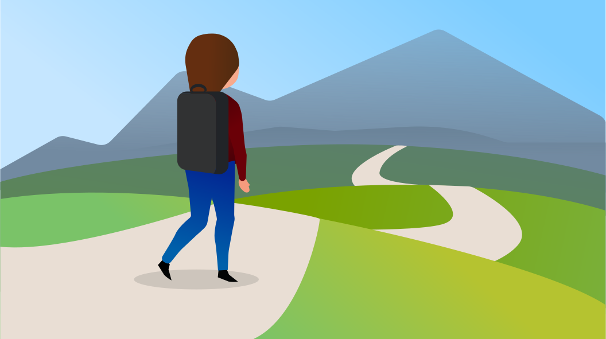

The Design Journey
During my early childhood, I was often seen with scissors cutting up paper and drawing on my walls with crayons. I found myself at a fork as I got older, wanting to work in the field of medicine to help others yet wanting to keep alive my creative aspirations. Despite going hard in the paint towards becoming a healthcare professional, my passion for art came full circle.